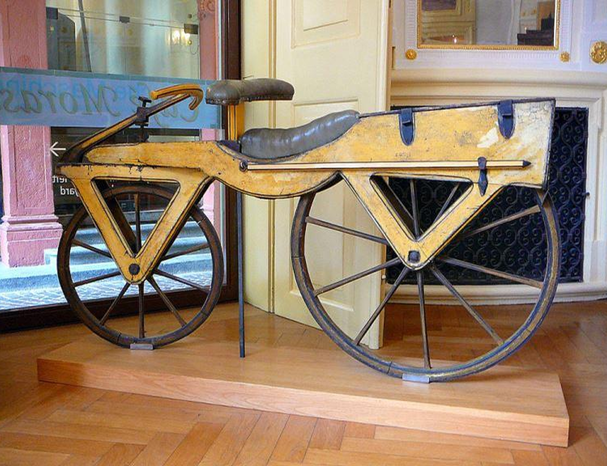
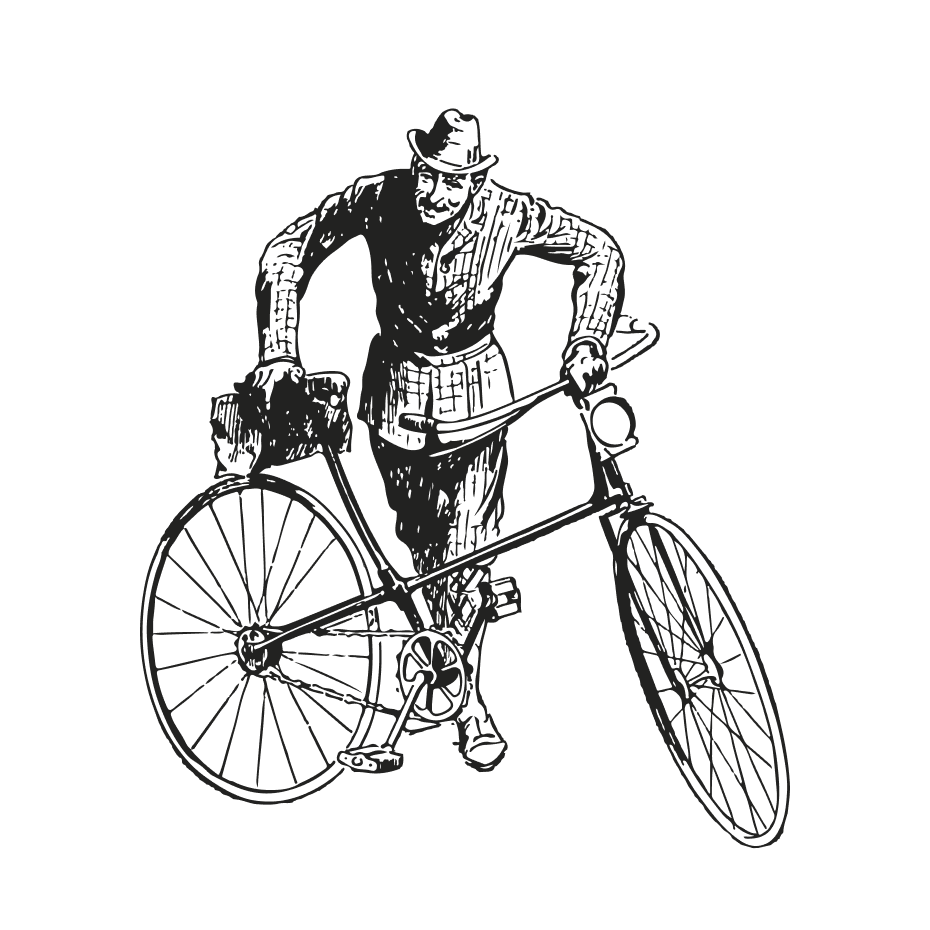

Na década de 1970, Rafael Lorenzzi enfrentava diariamente os desafios da locomoção. Mais do que dificuldades práticas, eram barreiras que limitavam sua liberdade — a ponto de transformar sua rotina e até levá-lo a perder o emprego como soldador em uma fábrica.
Ao seu lado, estava o irmão Frederico Lorenzzi, que vivia uma situação parecida e se recusava a aceitar aquele destino. Foi dele o incentivo que mudou tudo: “Construa a sua própria bicicleta.” E Rafael construiu — com coragem, talento e esperança.

Aquela primeira bicicleta, hoje preservada em nosso museu, não carregava apenas peças e parafusos: carregava uma história. Seu design, resistência e alma chamaram atenção, e rapidamente outras pessoas passaram a querer uma também. Assim, de um sonho nascido da necessidade, surgiu a Velo & Vogue.

Hoje, com 6 lojas e 2 fábricas espalhadas pelo mundo, seguimos fiéis à nossa origem: criar bicicletas que representam mais do que deslocamento — representam conquista, expressão e liberdade. Nossa produção em pequena escala garante aquilo que sempre nos definiu: qualidade impecável e atendimento humano, único e personalizado.